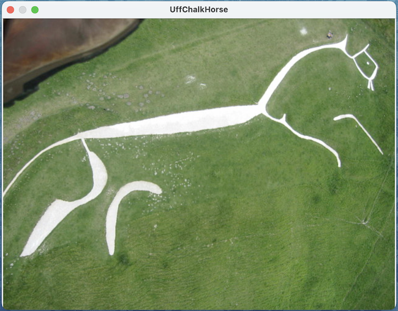
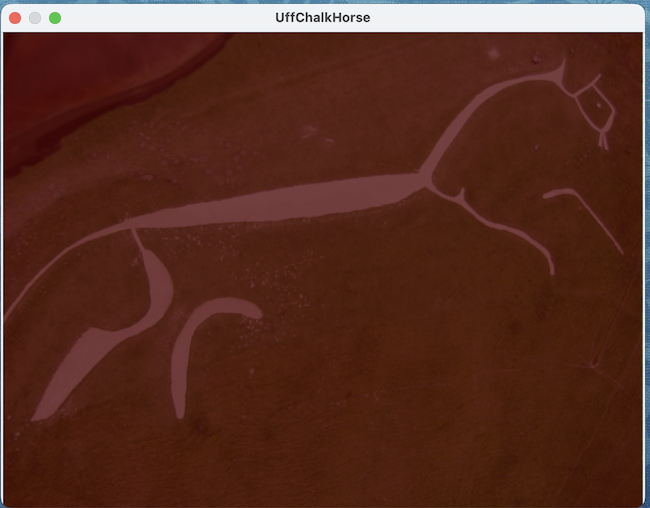
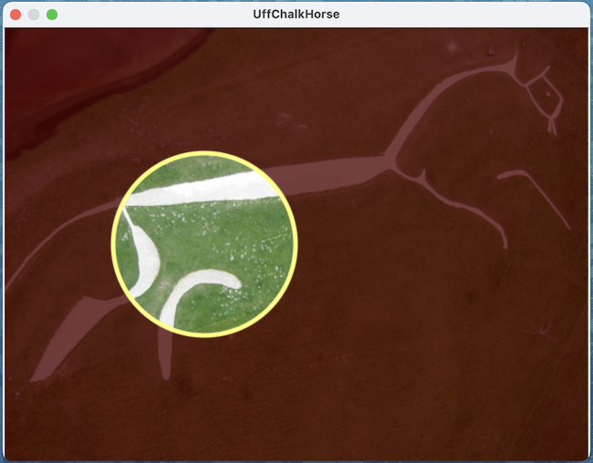

Here's an example of how to create a layer with a "hole" in it to see through to the layer below. Lets start out by opening a file, in this case an aeriel view of the Uffington Chalk Horse, a Creative Commons image by Dave Price

Now, this script creates a red tinted layer on top of the base canvas: By default, the new layer is created with the same size as the base canvas.
tell application "SinterPixels"
tell document 1
set aLayer to make new layer
set red component of every pixel of aLayer to 0.2
set alpha component of every pixel of aLayer to 0.75
end tell
end tell
At this point, we have one overlayer on top of the main canvas. Now, we will punch a hole in the red tint layer by creating a yellow circle with transparent fill using a blendCopy blend mode. :
tell application "SinterPixels"
tell layer 1 of document 1
make new circle with properties {radius:100, line width:5, position:{-100, 0}, fill color:clear, color:{0.5, 1.0, 1.0, 1.0}, blend mode:blendCopy}
end tell
end tell
{kind=link}